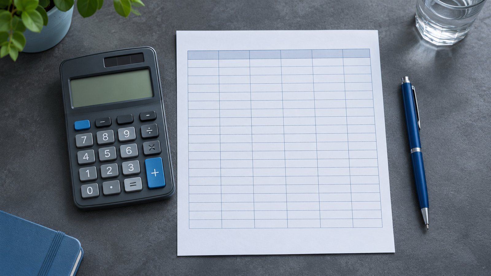

Пример · данные условные
Небольшое серийное производство / кейс-концепт
Увидеть кассовый разрыв до запуска.
Связываем продажи, загрузку и платежи в проверяемую модель.
Посмотреть результатФинмодельИллюстрация подхода, не выполненный заказ
Задача
Условный собственник планирует запуск цеха. Прибыль в плане есть, но материалы приходится оплачивать раньше, чем покупатель заплатит за продукцию. Нужна модель, которая показывает движение денег и позволяет менять ключевые предположения.
Что сделали
Показываем последовательность работы на условном проекте.
Собрали предпосылки
Зафиксировали объём продаж, цену, переменные расходы и график платежей.
Связали расчёты
Собрали помесячные доходы, расходы, инвестиции и денежный поток.
Проверили сценарии
Изменили загрузку и сроки оплаты, чтобы показать чувствительность результата.
Передали модель
Подготовили файл с формулами, словарь допущений и инструкцию по обновлению.

Модель с прозрачными предпосылками
В этом сценарии заказчик получает:
- Редактируемая таблица с формулами
- Базовый и стрессовый сценарии
- Дашборд денег и перечень ключевых допущений
Условный пример без прогноза доходности. Остаток каждого месяца равен предыдущему остатку плюс чистый поток.
Пример · данные условные
Денежный поток / пример
| Месяц | Чистый поток, тыс. ₽ | Остаток, тыс. ₽ |
|---|---|---|
| Январь | −300 | 200 |
| Февраль | −100 | 100 |
| Март | +150 | 250 |
| Апрель | +250 | 500 |
Стоимость и срок
40 000 ₽
Ориентир из прайса. Итоговый объём и стоимость согласуем по исходным данным.
По согласованию после получения данных
Как проходит работа
- 1Исходные данные и границы задачи
- 2Рабочая версия и вопросы
- 3Согласование и передача материалов
Срок считаем после получения согласованного комплекта данных. Ожидание внешних ответов обсуждаем отдельно.
Есть похожая задача?
Подготовьте исходные документы и желаемый результат.
Обсудить похожую задачу
Форма на сайте студии работает в демонстрационном режиме.